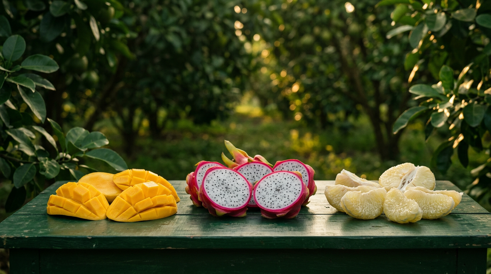
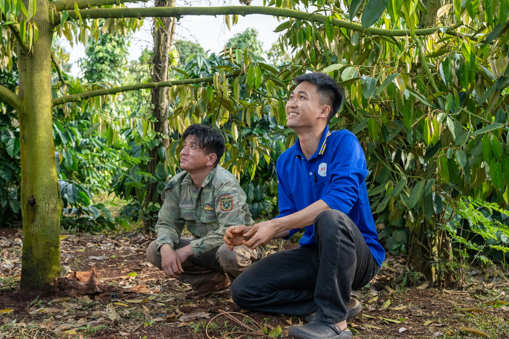
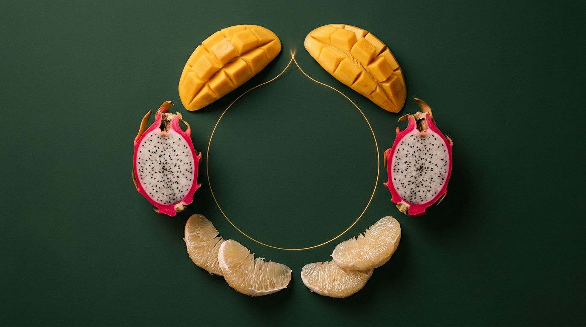
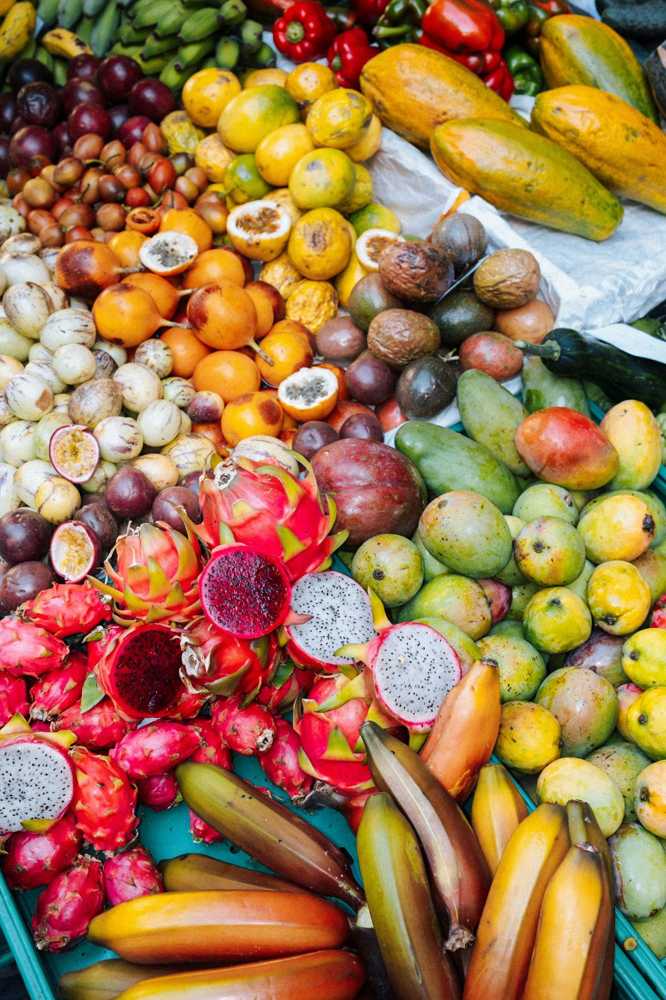

Một hương vị, nhiều câu chuyện.
Key visual đặt sản vật ở trung tâm và chừa khoảng nhìn thoáng. Nội dung tiếng Việt được dàn riêng trên trang, không dính vào ảnh.
Tri Team · Concept festival
Mùa Quả Hội Tụ là đề xuất festival kể câu chuyện trái cây Việt qua vùng trồng, người làm ra sản phẩm và những cuộc gặp mở thêm kết nối.
Đây là concept đề xuất. Thời gian và địa điểm festival chưa được xác nhận.
Từ vùng đất đến cuộc gặp
Festival đưa khách đến gần hơn với câu chuyện của sản vật: nơi cây lớn lên, người vun trồng và cách hương vị được sẻ chia.

Một hành trình có nhịp
Từ tò mò về nguồn gốc đến một lựa chọn có hiểu biết, mỗi điểm dừng mở ra một cách gặp gỡ mới với trái cây Việt.
Tìm hiểu vùng trồng, mùa vụ và câu chuyện phía sau sản phẩm.
Thử vị, gặp người làm ra sản phẩm, khám phá cách chọn và thưởng thức.
Lưu sản phẩm yêu thích, tìm điểm mua hoặc mở cuộc trò chuyện thương mại.
Hình ảnh concept
Ảnh và nội dung được đặt thành hai phần riêng để tiêu đề, mô tả và chú thích luôn dễ đọc, dễ cập nhật.

Key visual đặt sản vật ở trung tâm và chừa khoảng nhìn thoáng. Nội dung tiếng Việt được dàn riêng trên trang, không dính vào ảnh.

Hình tròn gợi cuộc hội tụ; xanh vườn, vàng xoài và hồng thanh long nối phần hình ảnh với bộ nhận diện festival.

Ảnh chụp được giữ nguyên; tên mục, nội dung và ghi nguồn nằm bên ngoài ảnh để người xem đọc được và nhóm có thể sửa độc lập.
Hồ sơ đề xuất · Tri Team
Video mở đầu và 9 slide trình bày câu chuyện, không gian trải nghiệm, truyền thông và các bước triển khai.
Việt Nam
Mùa Quả Hội Tụ
Nếm vị bản địa — Kết nối giá trị Việt
Đang tải nội dung trình chiếu…Bản văn tương đương